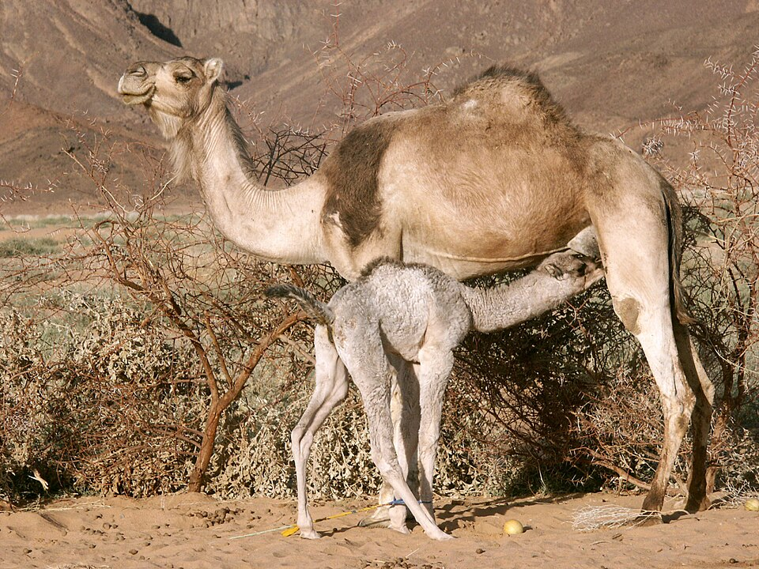

Overview
One-humped domesticated camel, highly adapted to heat and water scarcity. [1]
Native range
Domesticated; no wild population. Kept across North Africa, the Middle East and beyond. [1]
Size
300–690 kg; males ~10% heavier than females (males 400–600 kg). [1]
Lifespan
40–50 years in captivity (max ~50). [1]
Breeding & gestation
370–440 days. [1]
Temperament & social structure
Not verified from a primary source for this page.
Habitat needs
Hot, dry climates. Tolerates >30% water loss and can drink ~100 L in 10 minutes; body temperature varies daily from ~34 °C to 41 °C to save water. [1]
Where they thrive (Texas / US)
INFERRED only: desert-adapted (see Habitat needs), so the arid Trans-Pecos/Chihuahuan Desert is the closest climate match; no Texas county distribution data found. See the interactive Texas species map (../site/map.html). [1]
Space per animal
Scottish DWA guidance (minimum, zoo/licence context): one camel ≥5×10 m; one male + two females ≥10×20 m. Pasture-kept animals need far more. [2]
Housing & shelter
Provide a shelter large enough for all animals, sited against the worst prevailing weather, plus shade through all daylight hours; lockable shelter recommended. [2][3]
Fencing
Wire mesh, visible high-tensile wire or post-and-rail at least 1.9 m (6 ft); mesh must not entangle heads or legs; barbed wire is not appropriate. [2]
Natural diet
Not verified in detail for this page; consult the husbandry manual. [3]
Feed & supplementation
No verified protein/mineral figures for this page.
Common health issues & parasites
No verified species-specific list for this page; work with a camelid vet.
Vet care & vaccination
No vaccines are labeled for this species in the US; any vaccination protocol is extra-label and should be set by a veterinarian experienced with exotic hoofstock. (No specific protocol was verified for this page.)
Handling & capture
Not verified for this page; camels are large and can be dangerous—use experienced handlers. [2]
Conservation status
IUCN Red List: Not assessed as a wild species (domesticated; no wild population).
Legal notes (general info, not legal advice)
Camels are listed under the UK Dangerous Wild Animals regime, a sign of handling risk; US state rules vary. General information, not legal advice. USDA APHIS licensing under the Animal Welfare Act applies to dealers and exhibitors; check USDA and your state wildlife and animal-health agencies before buying, moving or selling. [2][4]
Sources
- Animal Diversity Web (Univ. of Michigan) – Camelus dromedarius
- Scottish Government – Dangerous Wild Animals species guidance: Camels (fence ≥1.9 m, no barbed wire, enclosure guide)
- Arabian Camel husbandry manual (NSW Fauna & Marine Parks Assoc.) – shelter/shade
- USDA APHIS – Animal Welfare Act licensing & registration
Figures are taken from the numbered sources; items marked "not verified" could not be confirmed from a primary source and are intentionally left blank. Husbandry guidance is general—confirm with an exotic-animal veterinarian.